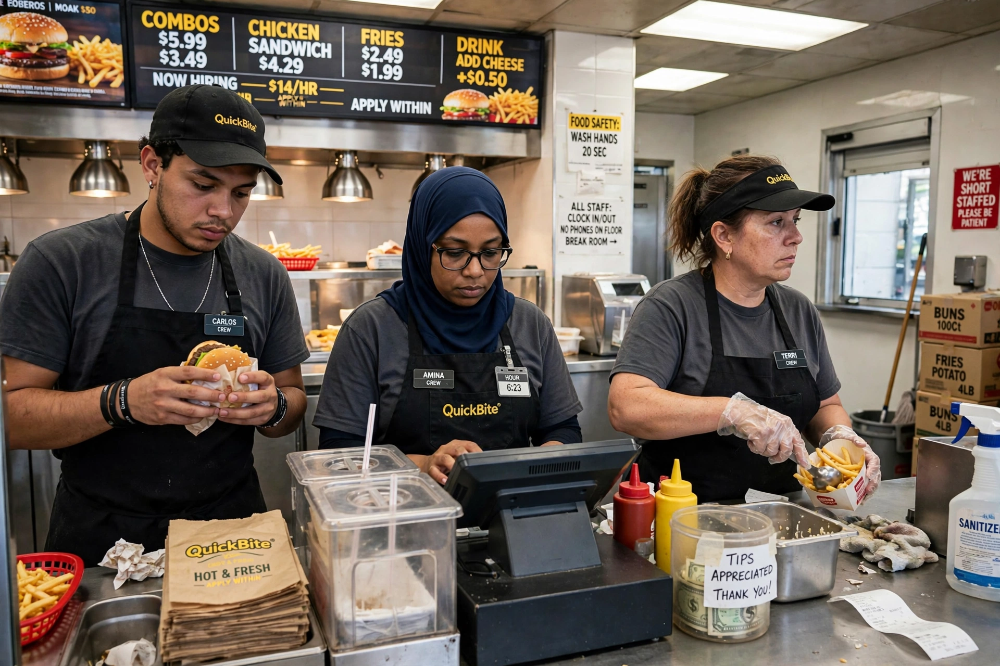

Low wage
From Wikipedia, the free encyclopedia

A low wage is a wage considered insufficient or inadequate for workers to meet a decent standard of living. The OECD defines low-wage workers as those earning less than two-thirds of the median wage in their country, a threshold widely used in labour statistics. Low-paid work is disproportionately concentrated in retail, hospitality, food service, care work, agriculture, and cleaning, and is often associated with part-time, temporary, or informal employment arrangements.
Causes and debate
Economists attribute low wages to factors including an abundance of low-skilled labour, weak collective bargaining coverage, monopsony power of employers, globalization, and technological change. Policy debates concern the effects of minimum wages, living wage campaigns, earned income tax credits, and collective bargaining rights. Critics of minimum wage increases argue they may reduce employment for the least skilled, while supporters point to studies finding small or negligible employment effects and stress poverty reduction and reduced reliance on public assistance. The concept overlaps with that of the "working poor" — people employed but still living in poverty.